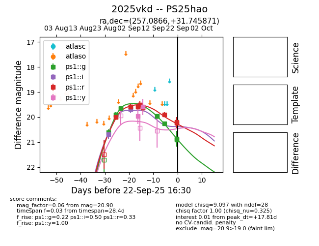
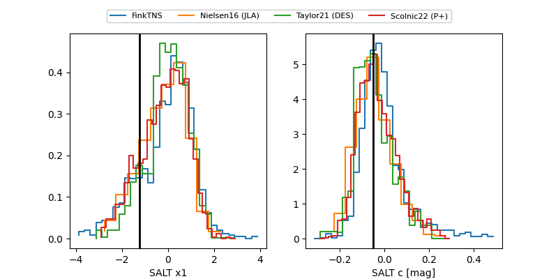

TNS: 2025vkd
YSE: 2025vkd
2025vkd (yse,tns)
PS25hao (panstarrs)
equatorial (ra, dec) = (257.0866,+31.74587)
galactic (l, b) = (54.3031,+34.68007)


last ps1::g=20.90, ps1::i=19.69, ps1::r=20.20, ps1::y=19.60
10 ps1::g, 3 ps1::i, 13 ps1::r, 2 ps1::y detections